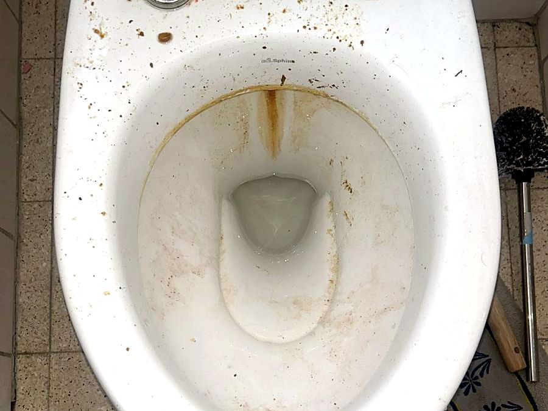
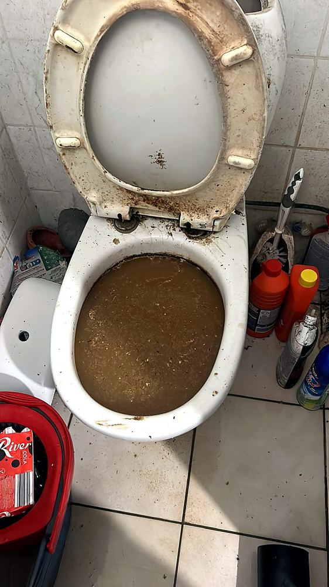
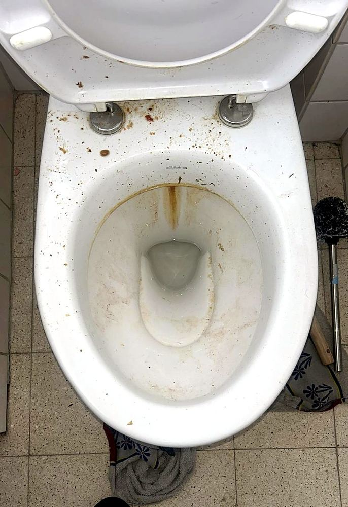

Are your toilets or WC clogged in Brussels and surroundings, in Brussels and surroundings? Is water rising from the sewer? Don't panic. Our plumbing company intervenes in emergency 24/7 for drain unblocking at the best price. Fast, clean and efficient service.

A clogged toilet is one of the most unpleasant household problems. If the plunger or chemicals are no longer enough, the blockage is probably located further down the pipe.
Our intervention methods:


Real photos from our jobs
Service available 24/7 in Brussels and surroundings.